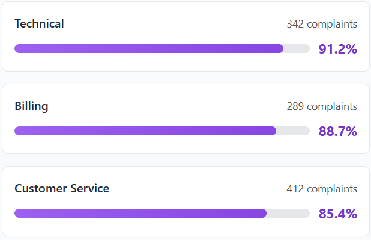
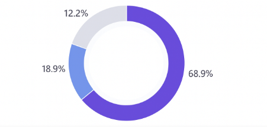
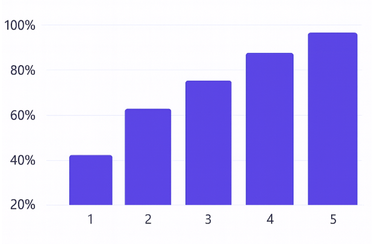
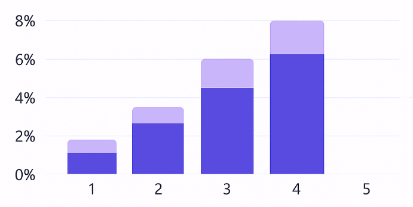
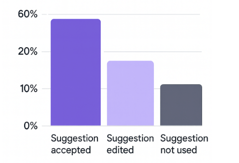
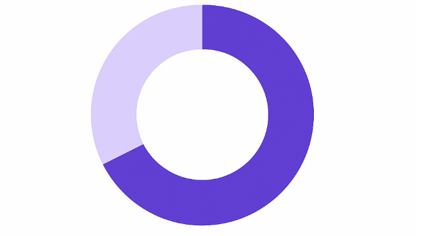

Routing Accuracy
Target ≥ 90%
93%
+3% vs last period
Percentage of complaints routed to the correct department.
Routing and priority scoring accuracy for model-driven complaint handling.
Percentage of complaints routed to the correct department.
Complaints manually rerouted after the model’s decision.
Model’s 1–5 priority score matches the final human score.
Complaints where operators changed the model’s priority score.
How often the model chose the correct department.

Distribution of accepted vs manually rerouted complaints.

How often each priority level (1–5) is confirmed by employees.

Where employees changed the model’s priority score.

How often employees apply or lightly edit the model’s suggested resolution.

Resolution outcomes for complaints where the model’s suggested resolution was used.

Sampled complaints where routing or priority was overridden by employees.
| Ticket ID | Timestamp | Customer Type | Routing | Priority | Reason | |
|---|---|---|---|---|---|---|
| CX-10482 | 24 Nov 2025 – 10:14 | Tenant | Model: Facilities → Final: Facilities | 3 → 5 | Under-scored urgency | |
| CX-10431 | 24 Nov 2025 – 09:02 | Tenant | Model: Billing → Final: Leasing | 2 → 3 | Policy exception | |
| CX-10398 | 23 Nov 2025 – 16:41 | Vendor | Model: Technical → Final: Facilities | 4 → 4 | Wrong department |